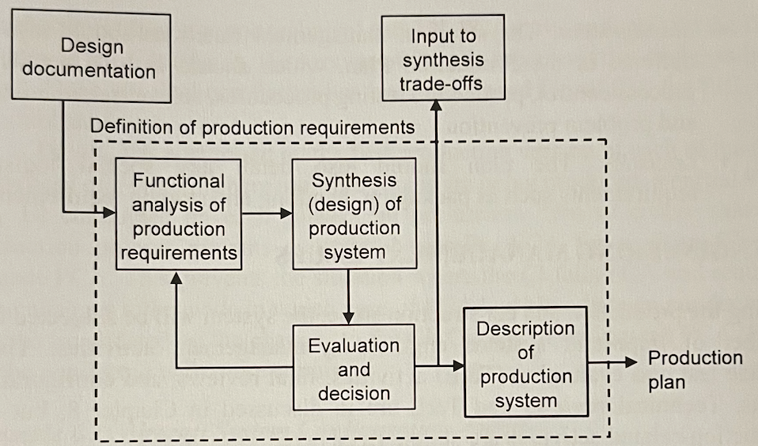
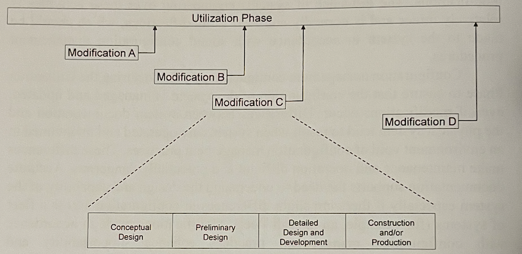
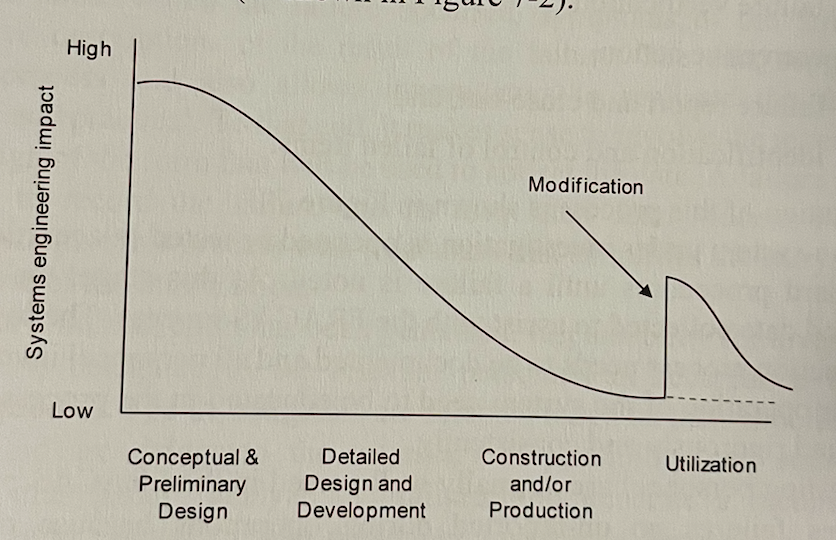
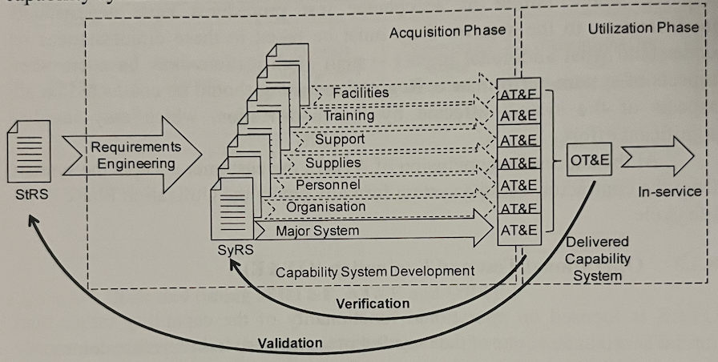
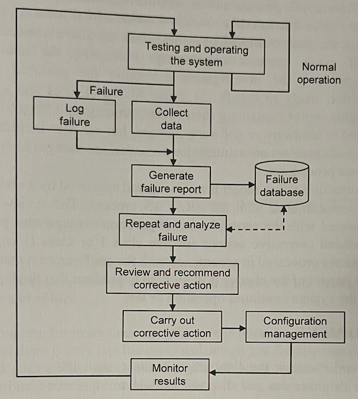
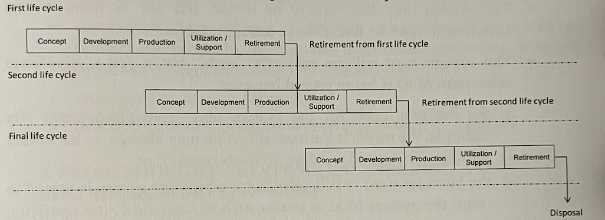

Lecture 10 from my Systems Engineering course at Twente. This also consists of Chapters 6 & 7 from the ASE book. It also includes concepts from Chapter 8.
Construction and Production (Chapter 6)
We already established in the Detailed Design and Development lecture that the PBL has been established and the production process is in place and has been proven. We are now in the Production phase.
Scope
Some projects are aimed at producing only one copy of the system (few / “one-off”). Examples could include high-rise buildings or large ships. In this case, production is usually blended with the detailed design and integration process — a prototype may pass through stages of test and evaluation during which the design is refined.
Other projects are meant for series production where many copies of the system may be produced once one or two prototypes have been proven.
Many / Series Production
- Supply Chain
- Incoming goods inspection
- Work instructions
- QA inspections
- Outgoing logistics
Few / "one-off"
- Subsystem verification
- FCA / PCA
- “As-built TPD”
Production risks are mitigated by involving production specialists in the design team and as part of the design review process. Typical production issues that need to be addressed and monitored throughout the entire systems engineering process include:
- material availability (lead times), ordering, and handling;
- availability of skill sets (including any training);
- availability of production tools and equipment;
- fabrication requirements including production requirements, assembly drawings and instructions;
- processing and process control;
- assembly, inspection and test;
- packaging, storage, and handling.

Major Audits
Acceptance testing, alone, is insufficient. Audits should be conducted during production and/or construction to ensure that the system has been built in accordance with the approved specifications and project documentation — these are called configuration audits. This phase is the only opportunity to conduct them.
Functional Configuration Audit (FCA): does it work?
FCA is used to verify and certify that the performance of the CI meets specified requirements specified in the relevant Development Specifications and Product Specifications. Some CIs depend upon the successful operation of other CIs and are not testable until after system integration. FCAs for all CIs should be complete prior to releasing the design to full-scale production.
Physical Configuration Audit (PCA): was it built according to design?
The objective of PCA is to provide confidence that the as-built CIs match the low-level specifications. Once physical correlation has been confirmed for all CIs, the PBL can be established.
Once a CI has passed FCA, PCA can be conducted with more certainty.
Major Reviews
Integration checks: Test Readiness Review (TRR)
Testing is expensive and time-consuming. TRR are sometimes contractually required by the customer to demonstrate that the system CIs are ready to enter formal test and evaluation.
TRRs
CI-level TRRs are designed to avoid the unnecessary expense involved with committing T&E (testing and evaluation) resources to a CI or system that is not sufficiently mature to enter testing.
TRR normally reviews a range of documentation including:
- Test and Evaluation Master Plan (TEMP), MTP
- Test plans, TAS
- Test results, TAR (deliverables)
- Supporting documentation (user and operator manuals for e.g.)
- Support, test equipment, and facilities
Integration checks: Formal Qualification Review (FQR)
FQR
verify that the performance of each of the CIs meets all the functional requirements when integrated together into the system.
For example, a FQR may be required to verify that the software performs as designed when integrated with the actual hardware to be employed by the final system.
It also includes the Factory Acceptance Test (FAT — the system works before shipping it to the client) and the Site Acceptance Test (SAT — the system works at the client’s site as well).
Operational Use and System Support (Chapter 7)
Once the system has passed the necessary testing and audits, it is ready to enter operational service or use — The Utilization Phase. Configuration management continues to play a role during this phase. The influence of systems engineering over these activities is relatively minor and is normally confined to modifications, which should be made to the system in accordance with sound configuration management procedures.
Modifications may be made for a number of reasons:
- rectify discrepancies with the performance of the system that were not identified during the Acquisition Phase. They are usually found in the OT&E (Operational Test and Evaluation) effort when the system is placed in its operational environment and exercised in its intended purpose.
- Failures identified as part of the FRACAS (Failure Reporting, Analysis and Corrective Action System) process

The figure above illustrates how some significant modifications have the potential to be considered systems in their own right.
The figure below illustrates the effect of a modification on systems engineering impact.

Operational Test and Evaluation (OT&E)
- It is commonly the responsibility of the customer organization. It assesses the ability of the system and its components to meet the original stakeholder need under operational conditions.
AT&E Versus OT&E versus DT&E
- AT&E (Acceptance Test and Evaluation) is conducted at the end of the acquisition phase of each of the elements of the capability system in order to ensure that the contractor has met the requirements of the relevant SyRS — therefore an act of verification to ensure that the contractor has met their obligations.
- OT&E is an act of validation which ensures that the delivered capability system meets the stakeholder requirements in the StRS.
- DT&E (Developmental Test and Evaluation) occurs throughout the Acquisition Phase and aims to highlight deficiencies in the system design as early as possible.


Failure Reporting, Analysis and Corrective Action System (FRACAS)
- It is a closed loop system designed to continually maintain visibility into system operation and support.
- FRACAS relies on all failures being recorded so it is critical that operational failures are included — after all, the system spends a majority of its life in the Utilization Phase of the life cycle.
- record, analyze and rectify the cause of system failures, especially recurring or related failures.
- helps a lot in countering the decline in reliability and maintainability.

FRACAS vs Maintenance System
- The Maintenance System rectifies the failure
- FRACAS rectifies the cause
It has 6 steps:
- Failure reporting (OT&E),
- Failure analysis,
- Failure verification,
- Corrective action,
- Failure report and close-out,
- Identification and control of failed items.
Left Shift
Here it is worth remembering the left shift concept mentioned in the Acquisition Phase in Systems Engineering.
Left Shift is making early design choices with the later phases in mind, hoping to prevent integration issues, by identifying potential issues early on and making changes when that is still easy and cheap.
Retirement
If it can’t be reduced, reused, repaired, rebuilt, refurbished, refinished, resold, recycled or composted, then it should be restricted, redesigned or removed from production
This is the final stage in the system life cycle. A system may be retired from a number of life cycles before final disposal at end of life. For example, the initial owners may sell the system to a second organization which, having completed Conceptual Design and Preliminary Design in that life cycle, has decided to meet business requirements with an OTS solution (second-hand). Then again, the third organization acquires the system, refurbishes it and then fields it in a third life cycle.

Designing for more than one life cycle is important.
The potential retirement methods for the system are:
- Sold as a sh item,
- Re-deployed as a training aid,
- Destroyed and disposed as waste,
- Disassembled,
- Placed in storage..
Once the reasons for potential retirement have been identified, we can identify the design issues that arise:
- observance of recycling regulations,
- avoidance of the use of potentially hazardous/toxic materials,
- environmental impact,
- cost of disposal/destruction,
- cost of transportation for disposal,
- need for specialized personnel..